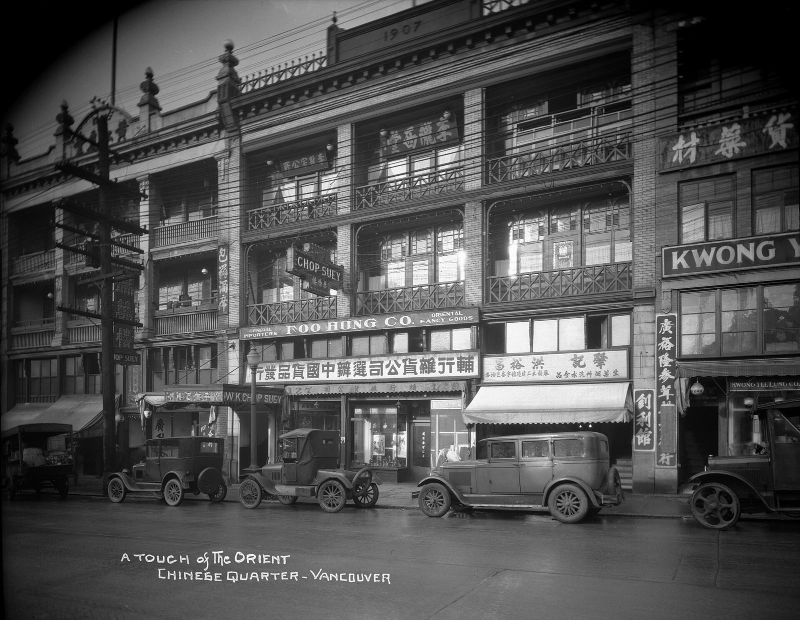

The viaduct lands, a new crossing of Burrard Inlet, more SkyTrain, a shoreline facing rising seas and a recovering Stanley Park forest are all on the table. In 1967, neighbours stopped a freeway through the city's core. The same kind of choice is in front of us now.
What's on the table now ↓Council voted in 2015 to remove the Georgia and Dunsmuir viaducts. The 2018 plan calls for 32 acres of parks and open space, about 1,800 social housing units, and a Hogan's Alley housing and cultural centre at 898 Main. The viaducts still stand, and the City says the timeline "is still uncertain." A January 2025 developer concept proposed about 5,000 homes in 12 towers.
Last timeHogan's Alley was largely erased to build these viaducts, the only piece of the 1967 plan ever built. See the map →TransLink is studying rapid transit to the North Shore through its Burrard Inlet Rapid Transit program. The study could eventually include a crossing just for transit. This time the debate is about trains and buses, not lanes into downtown.
Last timeA freeway tunnel was planned near Brockton Point, and Vancouverites killed it. See the map →The Broadway Subway is a 5.7 km Millennium Line extension with six underground stations, and it's scheduled to open in fall 2027. The UBC extension is still in planning, with no full construction funding. The 16 km Surrey–Langley extension is expected in late 2029.
Last timeThe city turned down freeways into its core, and transit grew in their place. See what got built →The seawall runs 28 km without a break. The City plans for about 1 m of sea-level rise by 2100. Its False Creek plan uses habitat benches, forest berms and "blue-green" corridors, not one big wall.
Last timeAn elevated freeway was drawn along the downtown waterfront. See the map →After a hemlock looper outbreak first identified in 2020, about 160,000 of roughly 600,000 trees are dead or dying. The Park Board has removed about 14,000 hazard trees and planted more than 75,000, with nearly 100,000 expected. The final stage began October 13, 2026 and runs to spring 2027.
Last timeThe crossing's causeway would have landed at Brockton Point, at the park's edge. See the map →At the end of 2023, 57.8% of Vancouver's sewer mains were separated, leaving 536 km of combined pipes that carry sewage and rainwater together. In heavy rain these can overflow into False Creek and Burrard Inlet. The regional deadline to end overflows is 2050. The City estimated in 2022 that meeting it would take about $99 million a year, up from about $36 million.
Last timeVancouver began replacing its combined pipes with separate ones in the 1970s. Half a century later, the job is a little over half done.About 80% of residents live within a 5-minute walk of a park or green space, and 99% within 10 minutes. Neighbourhood parkland averages 1.06 hectares per 1,000 people, against a target of 1.1 set in 1992. Grandview–Woodland and Fairview have less than 0.6.
Why it mattersThe Park Board says buying land in dense areas keeps getting harder, so growing neighbourhoods will rely more on making existing parks work harder.About 22% of the City's waterworks assets are in poor condition, and the City projects 26% within a decade as pipes reach the end of their lives. It expects more main breaks and leaks, and it raised its yearly renewal rate from 0.9% to 1.1% in the 2023–2026 capital plan.
Why it mattersThe City says the capacity of its pipes is a key uncertainty for population growth and new housing.In a 2016 survey, up to 15% of households had a dog, an estimated 32,000 to 56,000 dogs. The 36 off-leash areas, about 68 hectares, are 5.9% of parkland. They are spread unevenly: a 2017 study found six neighbourhoods under-served, some with more than 1,000 licensed dogs per hectare of off-leash space. On transit, pets must ride in small lap carriers, and only service dogs are exempt. Since 2024, parking at Spanish Banks, which has an off-leash beach, costs money (now $1.50 an hour).
Why it mattersIn under-served neighbourhoods there's little off-leash room close to home, and a dog too big for a lap carrier can't take transit. So for many, the nearest off-leash space is a drive away, and at some parks that drive now ends with a parking fee.Items 06–09: City of Vancouver Healthy Waters Plan reports (2022, 2025), Metro Vancouver Liquid Waste Management Plan, VanPlay parks analysis, the City's 2025 water rates report, the 2017 People, Parks & Dogs strategy, TransLink's pet policy, and parking reports. Sources
October 17, 2026Election day. In 1967, people shaped the city by showing up at hearings, signing petitions and talking to neighbours, whoever they voted for. Nonpartisan: this site names no candidates or parties.
“Neighbours sat at kitchen tables, knocked on doors and showed up at hearings that ran past midnight.”From the future essay
The mapSwitch between the 1967 freeway plan and today's city. Tap any label for a one-line note, and pinch or use + / − to zoom. Dashed red lines are approximate.